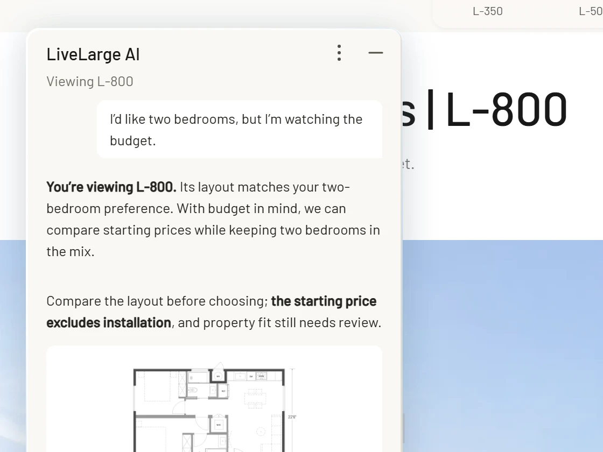
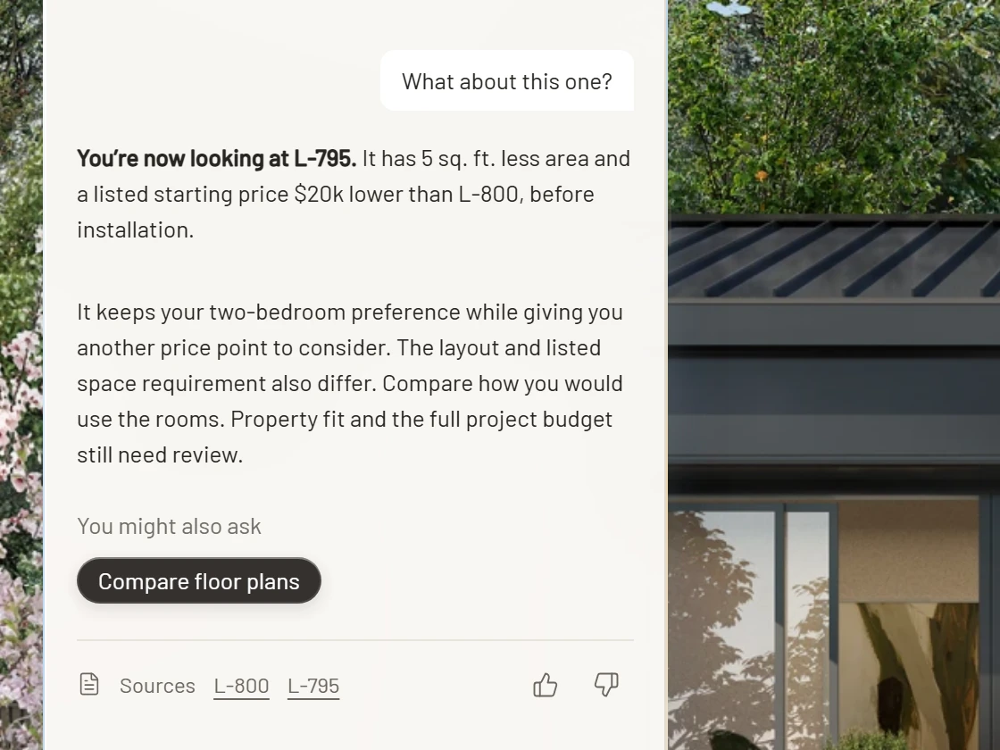
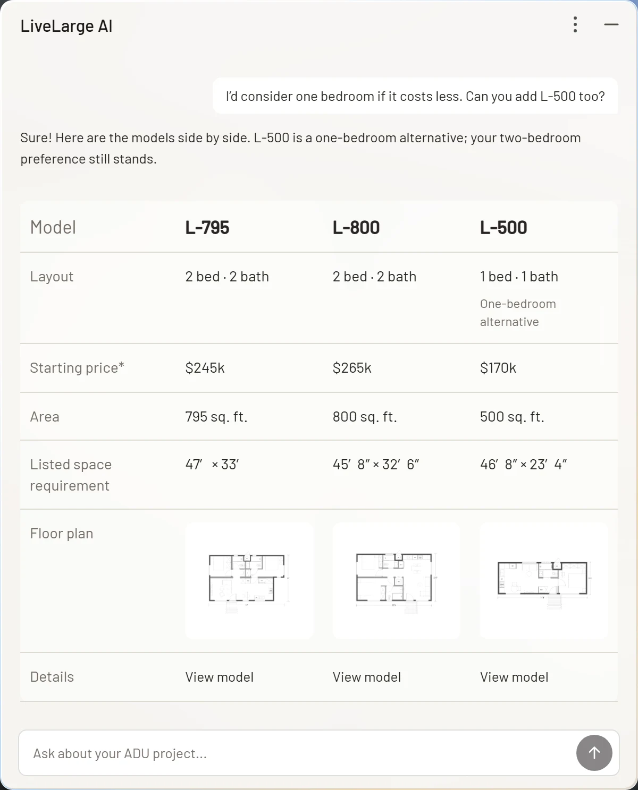
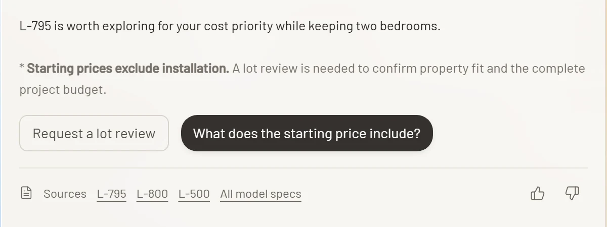
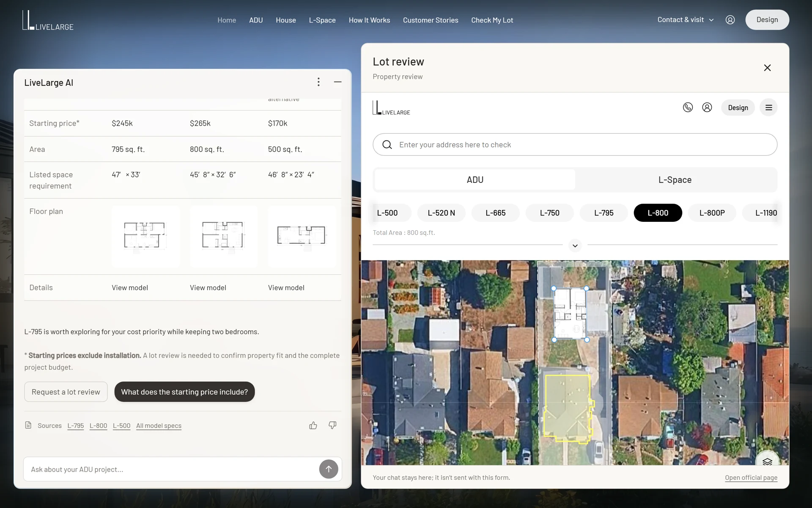
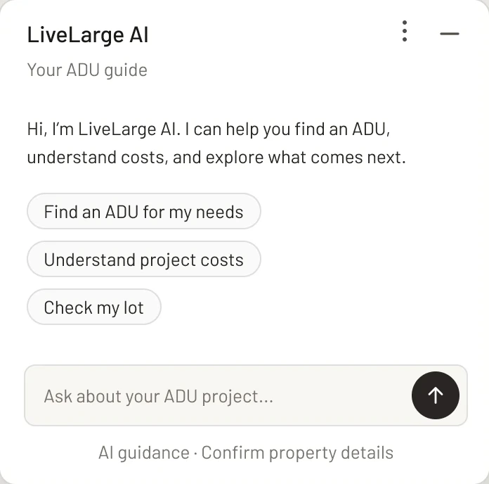
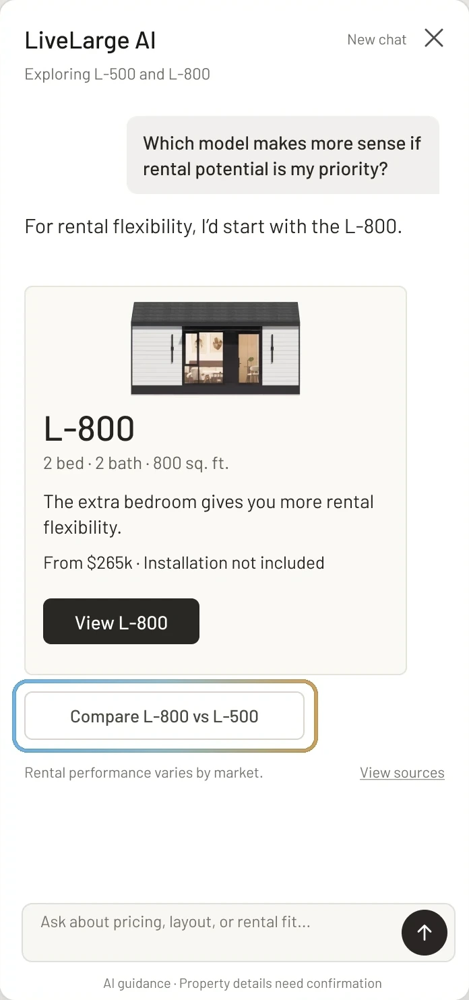
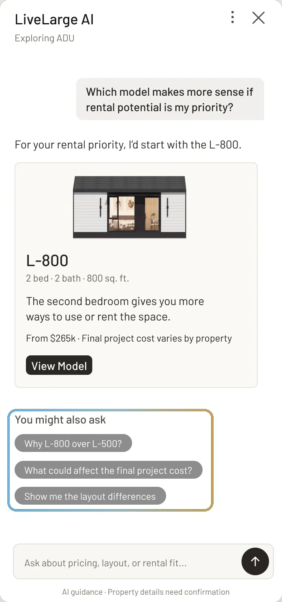

An AI assistant for choosing an ADU.
Adding an ADU (Accessory Dwelling Unit) is a major financial decision. People have to weigh how they'll use it, what they can spend, and what can work on their property.
I designed LiveLarge's assistant to help people explore models, understand the trade-offs, and know when to ask the team for a property review. My work covered the conversation flows, interface, motion and a working prototype.
- Client
- LiveLarge
- Role
- UX / Product Designer
- Scope
- Research, Conversational UX, Visual Design & Prototyping

Highlights
Two moments from the prototype.
01 Reframe
Bring the site's information into one conversation.
LiveLarge already had model pages, comparison tables, FAQs and a lot-review tool. Information about the homes, additional costs and next steps was scattered across these pages. The assistant gives visitors one place to ask questions, compare relevant details and keep track of the needs they've shared.
Browsing with and without the assistant.
- 1Browse models
- 2Read model details
- 3Compare price and layout
- 4Request a lot review
On the existing siteFind and compare information across the site.
- Browse the catalog for possible models.
- Open each model's specifications and floor plan.
- Use the model comparison table and check cost details in the FAQ.
- Open Check My Lot and enter property details.
With the assistantAsk questions and compare options in one conversation.
- Share the intended use, budget and bedroom needs.
- Ask about the model currently on screen.
- Compare relevant models side by side.
- Open the lot review beside the conversation.
What I found on the site.
I used these screens to decide what the assistant should explain and where it should point people next.


The existing table compared models by specification.
The site already offered a comparison table. The assistant builds on it by explaining how differences in price, layout and bedrooms relate to the visitor's budget and intended use.

The starting price was only part of the cost.
Model pages listed a starting price. The FAQ explained additional costs, including installation and site work. I wanted that distinction visible whenever the assistant discussed price.

Explain the options before offering a lot review.
Check My Lot provides a route to a property review. For someone still learning about LiveLarge, the assistant first explains the models and cost considerations, then offers a review when a property-specific answer is needed.
Three things the design needed to do.
- Leave room to browse.Keep the chat compact while visitors look at homes. Make it wider when a comparison needs more space.
- Keep what the visitor has shared.Use the current page and earlier messages together, so changing models doesn't mean repeating the same needs.
- Know when to involve the team.Explain that starting prices exclude installation. Leave the full project budget and property fit to LiveLarge's review.
Two examples that informed the conversation design.
I reviewed a range of assistants built into shopping and real-estate sites. Two of them, Homes.com's AI search and Alexa for Shopping, offer useful examples of turning broad requests into filters and recommendations. These examples informed how LiveLarge asks follow-up questions, presents prices and handles alternatives.


- Ask one question at a time.The Alexa example asks four questions in a single reply. For LiveLarge, each question has a specific job: establish the main priority, such as lower cost or more space, then ask how many bedrooms are needed to narrow the models.
- Explain what the price includes.In the Homes.com results I reviewed, base rent and fees were hard to distinguish. I kept the installation exclusion beside LiveLarge's model prices.
- Label alternatives clearly.Homes.com turned my one-bedroom request into a "1+ Bed" filter. For LiveLarge, a model outside the stated bedroom preference is an alternative, not a match.
I mapped the conversation flow before designing the interface.


1Missing details: answer what is known, then ask for the information needed next.

2Uncertain answer: explain what is known, what still needs checking, and who can check it.

3Failed request: keep the entered form fields and let the visitor try again.
02 Page context
Answer questions about the home on screen.
The assistant needs two kinds of context: the model on screen and what the visitor has already said. I kept the current model visible in the chat header while preserving the conversation as the visitor browsed.

2.2Name the model in the header.
"Viewing L-800" makes the page reference explicit before the visitor asks a question or reads an answer.
- 2.3
Update the model, keep the conversation.
Scrolling from L-800 to L-795 changes the header label. The earlier messages, including the request for two bedrooms and a lower cost, stay in place.

2.4Answer in relation to the previous model.
When the visitor asks "What about this one?", the reply names L-795 and compares it with L-800. It uses the bedroom and budget needs already in the conversation.
 2.5
2.5Keep those needs when the topic changes.
On How It Works, the visitor asks what happens next. The reply still considers the two-bedroom request and budget when it offers a lot review or a tour.
03 Clarify and recommend
Ask what would change the recommendation.
"I'm thinking about an ADU for rental income" gives the assistant a goal, but not enough to choose a model. I designed the next questions around the decisions that narrow the options: the visitor's priority, then the number of bedrooms.
What the visitor has shared
- Goal
- Not specified
- Priority
- Not specified
- Bedrooms
- Not specified
- Still to check
- Installation cost, property fit
Models to consider 4 models
- L-5001 bedroomFrom $170k
- L-520 N1 bedroomFrom $180k
- L-7952 bedroomsFrom $245k
- L-8002 bedroomsFrom $265k
Starting prices exclude installation.
L-795 starts $20k lower.
- 3.2
Find out what matters most.
For a rental, the visitor might prioritize a lower upfront cost, more living space, or property fit. The assistant offers those choices before making a recommendation.
Known: Rental income · Next question: Priority
- 3.3
Narrow the options by bedroom count.
Once the visitor chooses a lower upfront cost, the assistant asks how many bedrooms they need. It doesn't ask again about the rental goal or cost priority.
Known: Rental income, lower upfront cost · Next question: Bedrooms
- 3.4
Explain the difference before showing the cards.
L-795 and L-800 both have two bedrooms, but L-795 starts $20k lower. The reply leads with that difference, then shows the floor plans and space requirements for comparison.
Known: Two bedrooms · Models to consider: L-795, L-800
- 3.5
Show what still needs checking.
A lower starting price doesn't settle the full budget or property fit. I kept the installation exclusion and property-review note beside the lot-review button.
Still to check: Installation cost, property fit
Make the recommendation less absolute.
The earlier wording suggested that meeting the bedroom requirement was enough to call a model a match. I revised the wording and the controls around it.
Earlier · 14 September
Revised · Working prototype
- 1"Matches" became "a candidate to explore."
Two bedrooms makes a model relevant. It doesn't establish whether it works for the property or the full budget.
- 2Name what still needs review.
I added the unresolved questions about property fit and the full project budget to the answer.
- 3Remove the separate Edit needs button.
The conversation already lets the visitor change a preference in a reply, so I removed a second way to do the same thing.
04 Compare & verify
Make the trade‑offs easier to check.
Visitors change their minds, and they need to trust the numbers. When they add a model, the comparison keeps what they asked for earlier. Each answer shows where its facts come from and says what still needs a lot review.

Add a model, keep the preference.
L-500 joins the comparison as a one-bedroom alternative. The two-bedroom preference still shapes the recommendation.

Link the answer to its sources.
Every comparison links to the product pages behind it and to the full model catalog, so visitors can check the numbers themselves.

Hand off what it can't confirm.
The answer says what it can't confirm, property fit and the full budget, and offers a lot review. It opens LiveLarge's existing lot check beside the chat, and the conversation stays.
05 Visual design
Give the assistant a presence on the page.
I started with the panel's structure: where it sits, which controls stay fixed, and how it expands for a comparison. The first version used the site's Barlow typeface and plain surfaces.

1 Welcome and suggested questions

2 An answer with a model card

3 A wider panel for comparison
The PM wanted the assistant to feel more distinct from the website. I kept LiveLarge's typography and introduced a blue-to-gold light treatment for the greeting and response states. This gave the assistant its own visual identity while keeping the reading area calm.
Before

After


Show when a reply is being prepared.
Light moves along the panel's edge while the reply is pending. It fades when the answer appears, leaving the reading area still.
A · One compare button

B · Follow-up questions Chosen

5.3 · Make the card easy to scan.
L-500 · Family use · One bedroom
The card starts with the photo, followed by the specifications and price. The installation exclusion and property-review note stay beside the price rather than appearing in a separate explanation.


5.4 · Keep comparison cards consistent.
Consistent spacing and field order keep the same details aligned across the two cards. Floor plans, specifications and starting prices appear in the same positions, with the installation note beside each price.


06 Prototype
Check the behavior in a working prototype.
I built an interactive demo with coding agents to review conversation flows and interface behavior with the PM. Example conversations demonstrate model browsing, comparison, the lot-review panel, and what happens when the chat is cleared or minimized.
Internal testing
- +28%
- Prototype task completion
- +29%
- Lead conversion
- 18
- ADU decision-makers in research
07 Project timeline
From the first flow
to an approved design.
-
Research and scope
I reviewed the website and model specifications, mapped the browsing steps, and defined what the assistant could explain and what needed the team's review.
-
Conversation and structure
I mapped the questions, recommendations and comparisons, then wireframed the chat panel and its expanded layout.
-
Visual design and refinement
I responded to the PM's feedback on the assistant's visual presence, refined the cards and follow-up choices, and revised the recommendation wording.
-
Prototype and handoff
I built the interactive demo and reviewed its layouts and interaction states with the PM, including browsing, chat persistence and the lot-review panel.
Design approved · September 2026
VortexNet is building the staging version.